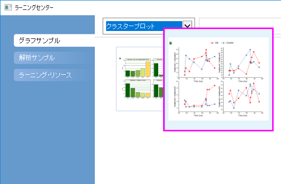
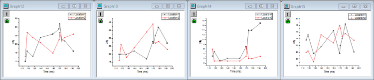
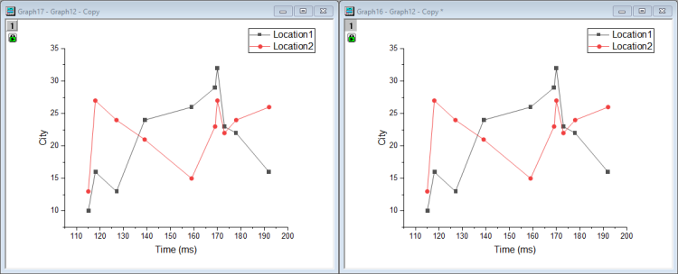
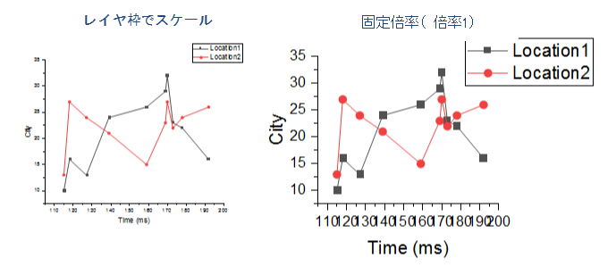
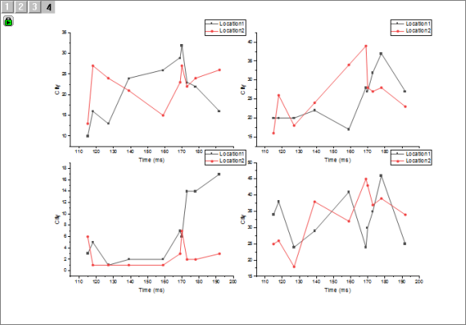
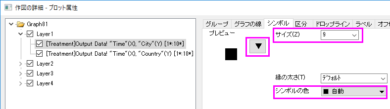
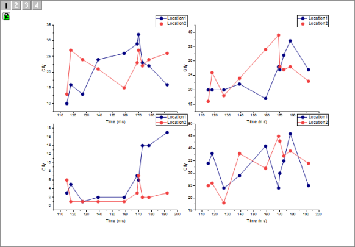
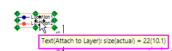
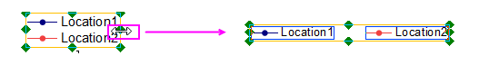
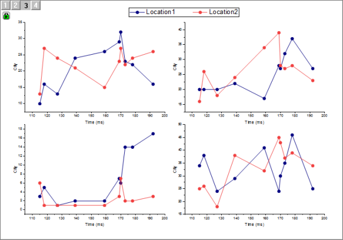

複数レイヤグラフの作成
MultiLayer-LinkAxes
サマリー
グラフレイヤはOriginのグラフの基本となる部分です。グラフレイヤは複数の座標軸と1つ以上のデータポイントに加え、軸タイトル、凡例、テキストラベル、描画オブジェクト、ボタンオブジェクト等で構成されています。グラフレイヤはグラフウィンドウ内では移動したり、サイズを変更することができます。グラフウィンドウは1から1024のグラフレイヤを開くことができます。
複数のレイヤを含むグラフを操作するときは、各プロットまたは各軸のスケールを個別に変更するのではなく、一度に複数のレイヤにカスタマイズを適用するためのツールを用意すると便利です。Origin
2018bからは、作図の詳細のレイヤタブにある共通の表示コントロールを使って、複数のグラフレイヤを同時に編集することができます。
必要なOriginのバージョン:Origin 2018b
学習する項目
- グラフが統合されたときに要素（軸タイトル、目盛ラベル、グラフの凡例）の拡大縮小を制御する方法
- 単一レイヤを含むグラフウィンドウを複数パネルグラフに統合する方法
- 1つのレイヤで行われたプロットまたは軸のカスタマイズがすべてのレイヤに適用されるように統合されたグラフを構成する方法
- 統合グラフのフォントに関するスケーリングの問題を修正する方法
- 統合された複数パネルグラフから空白を削除する方法
- 不要な凡例オブジェクトを削除し、それが複数パネルグラフの凡例として機能するように1つのオブジェクトをカスタマイズする方法
ステップ
- 新しいプロジェクトを開始します。F11キーを押してラーニングセンターを開き、グラフサンプルドロップダウンリストからクラスタープロットを選択します。Line
and Symbolをダブルクリックして開きます。
- 
- ワークシートが開いた状態でOutput Dataタブをクリックし、データの全12列が表示されるようにウィンドウのサイズを調整します。列ヘッダには（1）緑色のロックが付いており、これらは計算値であること、および（2）列の属性はパターンX1,
Y1, Y1, X2, Y2, Y2,などで繰り返されていることに注意してください。
- 列B(Y1)とC(Y1) を選択し、2Dグラフギャラリーツールバーの線＋シンボルボタン
をクリックします。次の列に対してもこれを繰り返します：E(Y2)+F(Y2), H(Y3)+I(Y3),
K(Y4)+L(Y4).これで、それぞれが2つのプロットを持つ1つのグラフレイヤを含む4つの同様のグラフウィンドウが作成されます（Originのデフォルトの動作は、選択したY列のすぐ左にあるX列に対してY値をプロットするため、これらのグラフを作成するときにX列を選択する必要はありません）。
- 
スケール要素
上記のグラフウィンドウを1つの4パネルグラフウィンドウに統合します。その前に、統合されたグラフでこれを制御する方法を理解できるように、要素（軸のタイトル、グラフの凡例など）の拡大/縮小について簡単に説明します。
- 4つのグラフのうちいずれかをクリックして、メニューからフォーマット：作図の詳細（レイヤ属性）を選択します。
- 作図の詳細ダイアログボックスでレイヤの大きさタブをクリックし、スケーリング設定を確認します。デフォルトでは、レイヤ枠でスケールが選択されています。これは、レイヤのサイズが変更されると、軸のタイトル、グラフの凡例などの添付要素のサイズもそれに応じて拡大縮小されることを示しています。
- OKをクリックして作図の詳細ダイアログを閉じ、グラフウィンドウのタイトルバー上で右クリックしてウィンドウの複製作成を選択します。これで2つの同じウィンドウができました。
- 複製されたウィンドウを選択して再度フォーマット：作図の詳細（レイヤ属性）を開きます。再度レイヤの大きさタブを開き、今回はスケーリングを固定倍率：1とし、OKを押して作図の詳細を閉じます。2つの同じグラフは、一方はスケーリング
= レイヤ枠でスケール、もう一方はスケーリング = 固定倍率：1です。
- 並べて比較できるように、2つのグラフの位置とサイズを変更してください。
- 
- 前述のように、最終的には4つの別々のグラフを1つの4パネルグラフに統合することを計画しています。その際には、グラフのサイズを4つのページに収まるように縮小する必要があります。たとえば、テキスト要素を縮小した場合の効果は何でしょうか。
比較するため異なるグラフを2つ作成します、一方はレイヤによってスケールされているもの、もう一方は固定サイズのものです。
- グラフウィンドウがレイヤ枠でスケールに設定されている場合、グラフページの空白部分をクリックします。緑色の選択ハンドルが表示されますので、CTRLキーを押しながら角のハンドルを、ページのおよそ25%までドラッグします。
- 固定倍率: 1に設定されているグラフで同じように操作します。
- 縮小された2つのグラフを比べてみましょう。プロットシンボル、テキストと凡例オブジェクトなど様々な違いが縮小したグラフに見られます。
- 
- 固定倍率: 1に設定されているグラフでは、4つのグラフが1つのページに統合されているため、問題が生じることが想定されます。レイヤ枠でスケールに設定されているグラフではデフォルト設定のままとなっています。
- このため、他のグラフと混同することはありません。固定倍率のグラフを削除しましょう。
グラフウィンドウの統合
- ワークスペースにある4つのグラフウィンドウで、グラフ操作：グラフウィンドウの統合を選択し、グラフウィンドウの統合ダイアログボックスを開きます。
- グラフボックスに4つ全てのグラフがリストされていることを確認してください。倍率ブランチを開き、スケールモードが自動に設定されていることを確認してください。ダイアログボックスの右側ペインにあるプレビューでは、グラフを統合した結果が表示されています。Tip:
統合前のグラフを残したい場合は、元のグラフを保持ボックスをチェックします。チェックされていなければ、統合時に元グラフが削除されてしまいます。
- OKをクリックすると、4つのパネルが統合されたグラフが作成されます。統合グラフの左上のアイコンは、それぞれ4つのグラフに対応しています。
- 
複数レイヤを同時に編集する際の共通な表示の制御
複数パネルグラフのレイヤ要素・設定、プロットや軸をカスタマイズするにはどうすればよいでしょうか？レイヤを1つずつ編集することもできますが、それでは煩雑になります。Origin
2018bからは、作図の詳細：レイヤタブ：共通の表示コントロールで一つのレイヤの編集内容を他のレイヤに適用できます。
- グラフをアクティブにして、フォーマット：ページ を選択します。「作図の詳細」ダイアログボックスが開きます。
- レイヤタブをクリックします。
- 共通の表示の、プロットプロパティにチェックを入れます。青い色のヒントが表示されているように、最初に適切なボックスをチェックして、それからレイヤ/プロットレベルのカスタマイズを行います。適用先コントロールで共通の表示の変更内容を適用するレイヤを選択できます。(適用先コントロールの詳細はご覧ください。)
- 作図の詳細の左のパネルで、Layer1アイコンの左の矢印をクリックして開き、2つのデータプロットを表示します。
- 
- レイヤの1番目のプロットをクリックして、作図の詳細の右パネルにあるシンボルタブで、シンボルギャラリー(下矢印)をクリック、シンボルをサークルに、サイズを15に設定します。シンボルの色を自動のままにすることで、線の色に従うようになります。OKをクリックして作図の詳細を閉じます。4つのパネルすべてでシンボルのサイズが拡大されていることがわかります。
- フォーマットとスタイルツールバーボタンを利用して、4パネルプロットのカスタマイズを続けます。灰色のプロットをクリックすると、両方のプロットが選択されることを確認してください。灰色のプロットを二度クリックすると、そのプロットのみが選択されます。
- スタイルツールバーの線/縁の色ボタンをクリックして紺色を選択します。4つ全てのパネルにおいて、灰色のプロット部分が紺色になっていることを確認してください。最終的なグラフはこのようになります。
- 
固定倍率
ここで、グラフのカスタマイズが完了したように思われます。しかし、4つのグラフが統合された場合、フォントサイズの縮小が問題となります。
- 凡例オブジェクトを1つ選択し、マウスカーソルでオブジェクトつかむと下のようにツールチップが表示されます。
- 
- 表示されたツールチップではフォントサイズが22ですが、実際のサイズは10.1であることがわかります。このように変更されている理由は、グラフ統合によってフォントがスケールダウンされているためです。
ここでの問題はフォントサイズが、外見上は10.1であるにも関わらず、Originはサイズが22であると認識していることです。(フォーマットツールバーのフォントサイズリストでは元サイズが22であることがわかります)この矛盾は簡単なメニュー操作で修正できます。
- グラフウィンドウを選択して、グラフ操作：縮尺を修正を選択し、デフォルトの値1のままOKをクリックします。4つの凡例オブジェクトの内1つを選択し、カーソルでつかむとツールチップが表示され、表示サイズと実サイズのどちらも10.1であることがわかります。(小数点以下の数値は0.5で四捨五入されますのであまり重要ではありません)フォーマットツールバーでも、フォントサイズは10になっていることをご確認ください。
しかしこの詳細情報はスキップしても構いません。スケール変更されたフォントサイズはユーザの混乱を招く元であり、上記のメニュー項目でフォントサイズをリセット出来ます。
レイヤをページに合わせる
これでグラフは完成しているようですが、さらに改良する点がいくつかあります。1つはグラフの余白を削除することです。これにはいくつかの方法がありますが、「レイヤをページに合わせる」メニューを利用すると簡単に行えます。
- グラフウィンドウをアクティブにして、ページにレイヤを合わせるを選択します。レイヤをページに合わせる: gfitpダイアログが開きます。
- 境界幅を5に設定し、レイヤアスペクト比を維持にチェックを入れ、OKをクリックします。これで、グラフが若干変形され、周囲の白い領域が小さくなります。
パネルグラフの凡例の調整
4つのパネルは共通の2つ変数を利用しているので、それぞれの凡例は必要ありません。ですので、3つのオブジェクトを削除して4番目の凡例オブジェクトを若干変更し、4つ全てのパネルの凡例とします。
- CTRLキーを押して3つの凡例オブジェクトを選択し、緑の選択ハンドルが表示されますので、削除を選択します。
- 残った凡例をグラフページの上部中央に配置します。
- 凡例を選択したまま(緑色のハンドルが表示された状態)、もう一度CTRLキーを押してハンドルを凡例の横にドラッグし、以下の画像の通り水平になるようにします。

- ページの上で凡例を中央に配置します。グラフは次のようになります。
- 